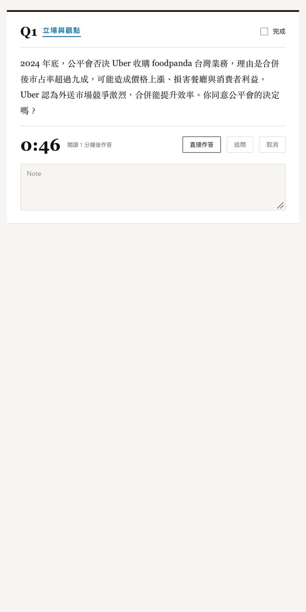

首頁 / 口試
口試準備
01題型以 116 為例
商研 每關 4 分鐘
- 個人關根據個人資料表提問，一分鐘自介、就讀動機、對系所的了解
- 英文關自行閱讀一分鐘，摘要後回答教授追問
- 邏輯關立場討論，自行思考一段時間後，選一個立場說明、教授追問
116 題目
載入中…
近五年面試官
載入中…
國企 每關 5 分鐘
- 英文關A4 單面文章讀 2.5 分鐘，摘要後回答教授追問
- 邏輯關個案分析，今年是針對公司財務虧損進行討論
- 個人關今年無自介，根據成績單和個人資料表提問
116 題目
載入中…
近五年面試官
載入中…
02個人關
國企、商研兩所的口試相對好準備，申請者的專業背景都不同，因此也不會有專業關。我認為教授會想在這關知道以下三件事：
- 申請者過去的經歷是否展現不錯的能力By 學業、實習、競賽、獲獎等經歷
- 申請者未來的發展方向是否與系所專業相吻合By 動機、對系所的了解
- 除此之外，眼前的申請者是一個什麼樣的人？
By 個人特質、當天的儀態
因此，我將個人關分為以下七個面向準備。
1. 個人資料表
精心設計＋熟讀（詳見書審分頁） 口試時教授手上會有個人資料表，國企所教授則還會翻看成績單
2. 自我介紹90秒版本
- 1 分鐘版本 >> 壓縮其中的 2 段經歷
eg, 有興趣的話可以再跟教授分享⋯⋯ - 2 分鐘版本 >> 放慢語速，並將動機展開。
講不到兩分鐘也無妨
- 開場：一句話，簡潔明瞭，大方。
教授早安 / 午安，我是 OOO，很高興今天來到商研所參與口試。
- 過去&未來：校系背景＋未來方向 → 因此我過去累積了 OO 能力 / 特質（3個）。
我來自清大經濟系，未來想⋯⋯，因此我在過去累積了⋯⋯能力。
- 三段經歷：用實際的經歷說明，也盡可能讓這三點有點故事性。
我覺得經濟系⋯⋯，因此我在第一份實習⋯⋯，現在我在 OO 實習⋯⋯。
- 小結&動機：一句話收束 → 因此我想進入 OO 所，說明為什麼適合我。
因此，我需要進到商研所，⋯⋯。
- 記憶點＋展望：最後留下個人記憶點（我是一個怎麼樣的人），並展望未來。
最後想跟教授分享⋯⋯，也期待未來在台大、在商研所⋯⋯
3. 動機
- 現在：就讀研究所的動機；機會成本（為什麼不讀ＯＯ？）
就業、OO 所、OO 學校、出國等 - 未來：想往特定領域、特定產業發展的動機
該產業、該領域各準備一個相關問題
4. 修課
- 大學：最⋯⋯的課、修課領域與ＯＯ所及未來發展方向的關係
- 研究所：想修的課、系所的哪些教授可以提供什麼樣的幫助
教授：主力 1 位（詳述）＋其他 2–3 位（略述）
5. 經歷特別是個人資料表上有提到的經歷
- 展現ＯＯ特質的例子 如：解決問題、領導力、團隊合作等
- 社團、實習、專案、競賽分別做了什麼 各準備一個例子
6. 時事如 AI、政策、科技發展
- 對ＯＯ領域、產業、系所的衝擊、互補或增益。
我是上網去看教授及企業家對這些議題的看法
7. 其他
- 想跟教授分享的事，留下個人記憶點（10–30 秒）
eg. 特別的經歷、進步的展現、未來的目標等 - 考古題
eg. 優缺點、興趣、像什麼動物 / 顏色等
03英文關
進行方式依考古題整理
- 自行閱讀 or 朗讀 開始時教授會說是哪一種
- 摘要 / 翻譯 / 教授追問 少數還會遇到文章以外的問題
- 篇幅約 3/4 面 A4（250-280 字）115 商研雖是 A5 但版面更擠
練習方法
- 每天閱讀 1–3 篇英文文章＆1–2 篇中文文章
- 維持閱讀的速度＆摘要的能力
- 講就對了，用最簡單的詞彙講
其他
- 相較於自行閱讀，若是需要「朗讀」，我對文章的理解程度會下降許多，可能是一個值得注意的點。
- 我是訂閱華爾街日報（一個月 3 美元），排程請 AI 每天晚上將文章截取至我指定長度的篇幅，並匯出成 PDF，隔天通勤的時候看。
- 國企通常可以閱讀超過 2分鐘、商研則只有 1分鐘（這兩年商研一關僅 4 分鐘），篇幅卻只差一段（約 50字、甚至更少）。
04邏輯關
題型依考古題整理
- 立場與觀點 選擇同意 / 不同意，說明原因 → 教授追問
- 圖表判斷 說明這張圖 / 回答問題 → 教授追問
- 陌生問題分析 如財務虧損、市場進入等 → 教授追問
我的方法論
- 立場與觀點
明確的選一邊站→ （視情況 confession）→ 說明原因（why）
→ 延伸說明（so what）→ 最好能搭配例子輔助說明（example） - 圖表判斷
釐清數字、圖表的定義 → 挑出 2 個關鍵特徵（key feature）
→ 說明第一點（why、so what）→ 說明第二點（why、so what） - 陌生問題分析 以財務虧損為例
Profit = Revenue − Cost → 判斷是價格（P）、銷量（Q），
還是成本（C）出了問題 → 提出相對應的解決方案 / 策略（短期 / 長期）

翻開題目後開始倒數 1 分鐘，另外每一題均有 3-5 題可能的「追問」。